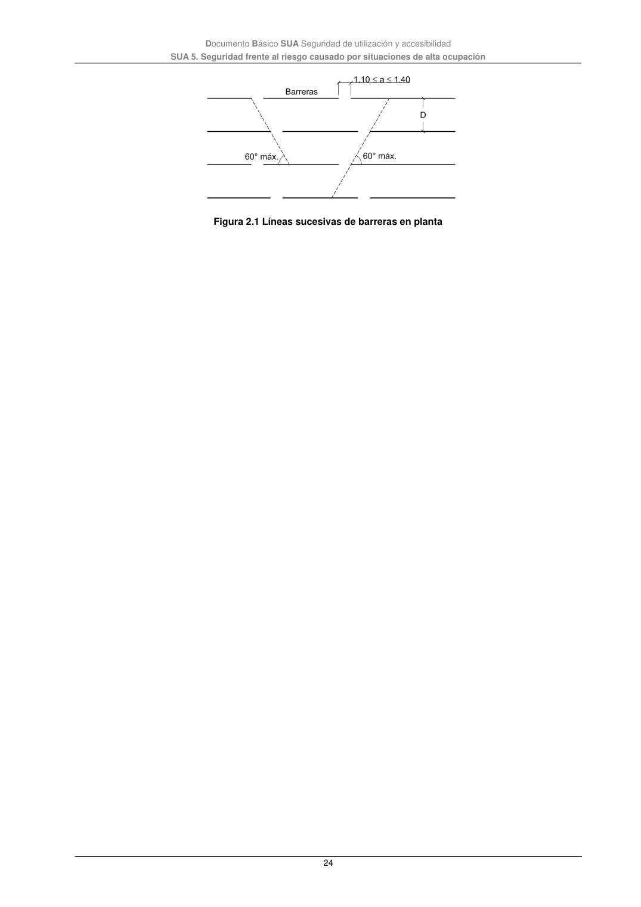

DB-SUA · Página 24 · versión 2022-06-14
SHA256: 3cfb5bbb135e8f02faebd8b844e03e8947994c18d4c9e675a7d2aa37d1cd5958 · página física 24 de 47 · métodos de encabezado
solo si están cotejados.
Formatos: Markdown · JSON de bloques · PDF p. 24 · imagen PNG
Documento Básico SUA Seguridad de utilización y accesibilidad SUA 5. Seguridad frente al riesgo causado por situaciones de alta ocupación 24 Figura 2.1 Líneas sucesivas de barreras en planta
